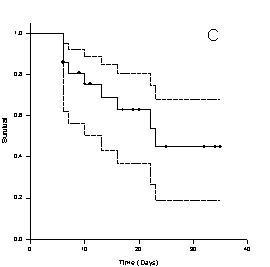
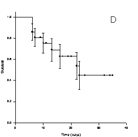

Using Test Options to Modify Graphs
The examples below show four variations that can be achieved by modifying the test options for survival curves. Once you've selected a test from the SigmaStat toolbar, you can open this dialog box by selecting from the menus:
The options used to create the examples below appear on the Graph Options tab of any of the Options for Survival dialog boxes.
Survival curve with censored symbols. Under Status Symbols, select Censored.
Survival curve with censored and failure symbols. Under Status Symbols, select both Censored and Failures.
Survival curve with both symbol types and 95% confidence intervals. To add 95% confidence intervals:
- Select Additional Plot Statistics.
-
From the Type drop-down list, select 95%
Confidence Intervals.
Figure 3. Survival Curve with both Symbol Types and 95% Confidence Intervals Survival curve with standard error bars. To add standard error bars:
- Select Additional Plot Statistics.
-
From the Type drop-down list, select Standard
Error Bars.
Figure 4. Survival Curve with Standard Error Bars 